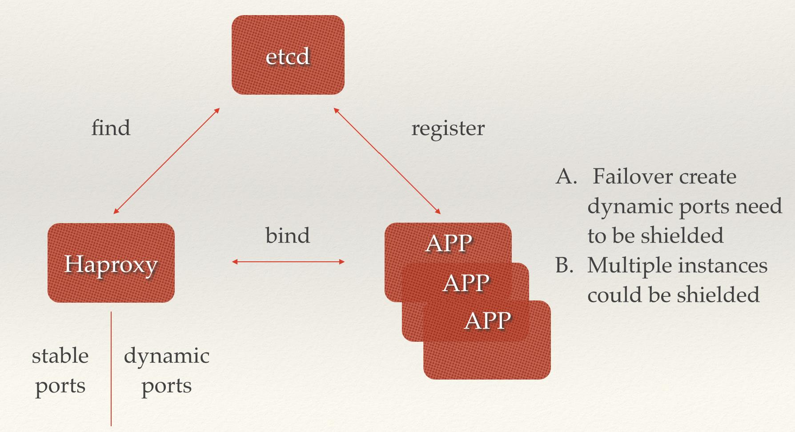
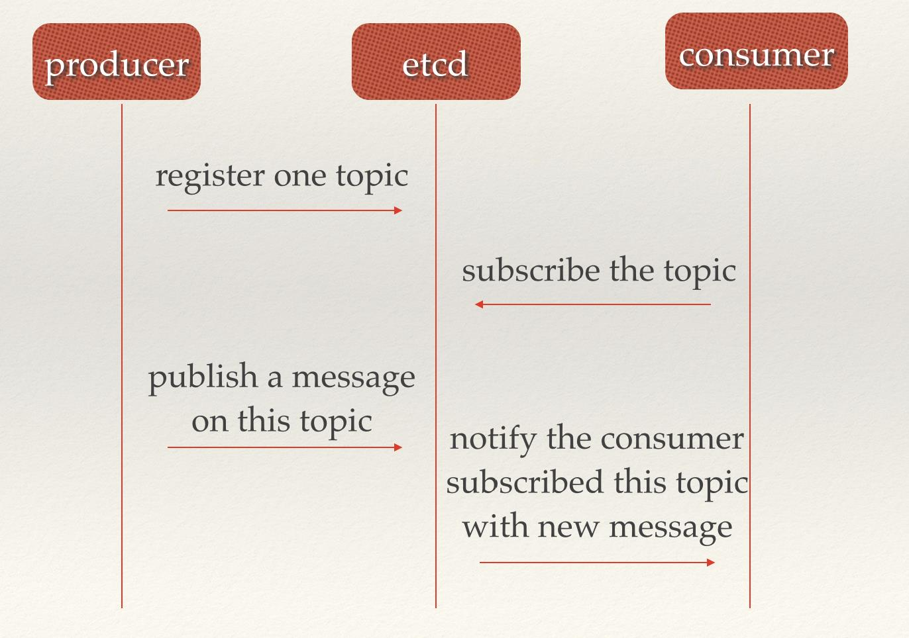
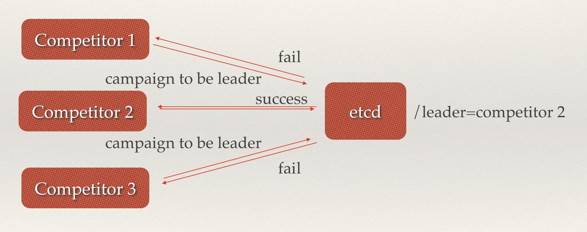

提到etcd很多人第一反应就是一个键值存储仓库。不过etcd官方文档的定义却是这样的：
A highly-available key value store for shared configuration and service discovery.
包含了配置共享和服务发现。
etcd作为一个受到ZooKeeper与doozer启发而催生的项目，除了拥有与之类似的功能外，更专注于以下四点。
- 简单：基于HTTP+JSON的API让你用curl就可以轻松使用。
- 安全：可选SSL客户认证机制。
- 快速：每个实例每秒支持一千次写操作。
- 可信：使用Raft算法充分实现了分布式。
接下来将针对剖析一些etcd的经典使用场景，来看看etcd这个基于Raft强一致性算法的分布式存储仓库能给我们带来哪些帮助。
值得注意的是，分布式系统中的数据分为控制数据和应用数据。使用etcd的场景默认处理的数据都是控制数据，对于应用数据，只推荐数据量很小，但是更新访问频繁的情况。
场景一：服务发现
在分布式系统中“服务发现”也是比较常见的问题：在同一个集群环境中不同的应用或服务，如何能够找到对方并建立连接，来完成后续的行为。本质上来说，服务发现就是想要知道集群中是否有进程在监听udp或tcp端口，并能通过名字就可以查找和连接。而要解决服务发现的问题，需要满足如下三个方面，缺一不可。
- 一个强一致性、高可用的服务存储目录： 基于Raft算法的etcd天生就是这样一个强一致性高可用的服务存储目录【安全的记录集群中的应用或服务的信息(地址、端口等)】。
- 一种注册服务和监控服务健康状态的机制：用户可以在etcd中注册服务，并且对注册的服务设置key TTL，定时保持服务的心跳以达到监控健康状态的效果。【能够完成新的应用或服务的注册添加进来，同样也能对现有的服务是否可用进行监控】
- 一种查找和连接服务的机制： 通过在etcd指定的主题下注册的服务也能在对应的主题下查找到。为了确保连接，我们可以在每个服务机器上都部署一个Proxy模式的etcd，这样就可以确保能访问etcd集群的服务都能互相连接。【已有的服务当被使用能够被找到并能连接】

来看服务发现对应的具体场景：
- 微服务协同工作架构中，服务动态添加。随着Docker容器的流行，多种微服务共同协作，构成一个相对功能强大的架构的案例越来越多。透明化的动态添加这些服务的需求也日益强烈。通过服务发现机制，在etcd中注册某个服务名字的目录，在该目录下存储可用的服务节点的IP。在使用服务的过程中，只要从服务目录下查找可用的服务节点去使用即可。

- PaaS平台中应用多实例与实例故障重启透明化。PaaS平台中的应用一般都有多个实例，通过域名，不仅可以透明的对这多个实例进行访问，而且还可以做到负载均衡。但是应用的某个实例随时都有可能故障重启，这时就需要动态的配置域名解析（路由）中的信息。通过etcd的服务发现功能就可以轻松解决这个动态配置的问题。

场景二：消息发布与订阅
在分布式系统中，最适用的一种组件间通信方式就是消息发布与订阅。即构建一个配置共享中心，数据提供者在这个配置中心发布消息，而消息使用者则订阅他们关心的主题，一旦主题有消息发布，就会实时通知订阅者。通过这种方式可以做到分布式系统配置的集中式管理与动态更新。
- 应用中用到的一些配置信息放到etcd上进行集中管理。这类场景的使用方式通常是这样：应用在启动的时候主动从etcd获取一次配置信息，同时，在etcd节点上注册一个Watcher并等待，以后每次配置有更新的时候，etcd都会实时通知订阅者，以此达到获取最新配置信息的目的。
- 分布式搜索服务中，索引的元信息和服务器集群机器的节点状态存放在etcd中，供各个客户端订阅使用。使用etcd的key TTL功能可以确保机器状态是实时更新的。
- 分布式日志收集系统。这个系统的核心工作是收集分布在不同机器的日志。收集器通常是按照应用（或主题）来分配收集任务单元，因此可以在etcd上创建一个以应用（主题）命名的目录P，并将这个应用（主题相关）的所有机器ip，以子目录的形式存储到目录P上，然后设置一个etcd递归的Watcher，递归式的监控应用（主题）目录下所有信息的变动。这样就实现了机器IP（消息）变动的时候，能够实时通知到收集器调整任务分配。
- 系统中信息需要动态自动获取与人工干预修改信息请求内容的情况。通常是暴露出接口，例如JMX接口，来获取一些运行时的信息。引入etcd之后，就不用自己实现一套方案了，只要将这些信息存放到指定的etcd目录中即可，etcd的这些目录就可以通过HTTP的接口在外部访问。

场景三：负载均衡
在场景一中也提到了负载均衡，本文所指的负载均衡均为软负载均衡。分布式系统中，为了保证服务的高可用以及数据的一致性，通常都会把数据和服务部署多份，以此达到对等服务，即使其中的某一个服务失效了，也不影响使用。由此带来的坏处是数据写入性能下降，而好处则是数据访问时的负载均衡。因为每个对等服务节点上都存有完整的数据，所以用户的访问流量就可以分流到不同的机器上。
- etcd本身分布式架构存储的信息访问支持负载均衡。etcd集群化以后，每个etcd的核心节点都可以处理用户的请求。所以，把数据量小但是访问频繁的消息数据直接存储到etcd中也是个不错的选择，如业务系统中常用的二级代码表（在表中存储代码，在etcd中存储代码所代表的具体含义，业务系统调用查表的过程，就需要查找表中代码的含义）。
- 利用etcd维护一个负载均衡节点表。etcd可以监控一个集群中多个节点的状态，当有一个请求发过来后，可以轮询式的把请求转发给存活着的多个状态。类似KafkaMQ，通过ZooKeeper来维护生产者和消费者的负载均衡。同样也可以用etcd来做ZooKeeper的工作。

场景四：分布式通知与协调
这里说到的分布式通知与协调，与消息发布和订阅有些相似。都用到了etcd中的Watcher机制，通过注册与异步通知机制，实现分布式环境下不同系统之间的通知与协调，从而对数据变更做到实时处理。实现方式通常是这样：不同系统都在etcd上对同一个目录进行注册，同时设置Watcher观测该目录的变化（如果对子目录的变化也有需要，可以设置递归模式），当某个系统更新了etcd的目录，那么设置了Watcher的系统就会收到通知，并作出相应处理。
- 通过etcd进行低耦合的心跳检测。检测系统和被检测系统通过etcd上某个目录关联而非直接关联起来，这样可以大大减少系统的耦合性。
- 通过etcd完成系统调度。某系统有控制台和推送系统两部分组成，控制台的职责是控制推送系统进行相应的推送工作。管理人员在控制台作的一些操作，实际上是修改了etcd上某些目录节点的状态，而etcd就把这些变化通知给注册了Watcher的推送系统客户端，推送系统再作出相应的推送任务。
- 通过etcd完成工作汇报。大部分类似的任务分发系统，子任务启动后，到etcd来注册一个临时工作目录，并且定时将自己的进度进行汇报（将进度写入到这个临时目录），这样任务管理者就能够实时知道任务进度。

场景五：分布式锁
因为etcd使用Raft算法保持了数据的强一致性，某次操作存储到集群中的值必然是全局一致的，所以很容易实现分布式锁。锁服务有两种使用方式，一是保持独占，二是控制时序。
- 保持独占即所有获取锁的用户最终只有一个可以得到。etcd为此提供了一套实现分布式锁原子操作CAS（CompareAndSwap）的API。通过设置prevExist值，可以保证在多个节点同时去创建某个目录时，只有一个成功。而创建成功的用户就可以认为是获得了锁。
- 控制时序，即所有想要获得锁的用户都会被安排执行，但是获得锁的顺序也是全局唯一的，同时决定了执行顺序。etcd为此也提供了一套API（自动创建有序键），对一个目录建值时指定为POST动作，这样etcd会自动在目录下生成一个当前最大的值为键，存储这个新的值（客户端编号）。同时还可以使用API按顺序列出所有当前目录下的键值。此时这些键的值就是客户端的时序，而这些键中存储的值可以是代表客户端的编号。

场景六：分布式队列
分布式队列的常规用法与场景五中所描述的分布式锁的控制时序用法类似，即创建一个先进先出的队列，保证顺序。
另一种比较有意思的实现是在保证队列达到某个条件时再统一按顺序执行。这种方法的实现可以在/queue这个目录中另外建立一个/queue/condition节点。
- condition可以表示队列大小。比如一个大的任务需要很多小任务就绪的情况下才能执行，每次有一个小任务就绪，就给这个condition数字加1，直到达到大任务规定的数字，再开始执行队列里的一系列小任务，最终执行大任务。
- condition可以表示某个任务在不在队列。这个任务可以是所有排序任务的首个执行程序，也可以是拓扑结构中没有依赖的点。通常，必须执行这些任务后才能执行队列中的其他任务。
- condition还可以表示其它的一类开始执行任务的通知。可以由控制程序指定，当condition出现变化时，开始执行队列任务。

场景七：集群监控与Leader竞选
通过etcd来进行监控实现起来非常简单并且实时性强。
- 前面几个场景已经提到Watcher机制，当某个节点消失或有变动时，Watcher会第一时间发现并告知用户。
- 节点可以设置TTL key，比如每隔30s发送一次心跳使代表该机器存活的节点继续存在，否则节点消失。
这样就可以第一时间检测到各节点的健康状态，以完成集群的监控要求。
另外，使用分布式锁，可以完成Leader竞选。这种场景通常是一些长时间CPU计算或者使用IO操作的机器，只需要竞选出的Leader计算或处理一次，就可以把结果复制给其他的Follower。从而避免重复劳动，节省计算资源。
这个的经典场景是搜索系统中建立全量索引。如果每个机器都进行一遍索引的建立，不但耗时而且建立索引的一致性不能保证。通过在etcd的CAS机制同时创建一个节点，创建成功的机器作为Leader，进行索引计算，然后把计算结果分发到其它节点。

场景八：为什么用etcd而不用ZooKeeper？
etcd实现的这些功能，ZooKeeper都能实现。那么为什么要用etcd而非直接使用ZooKeeper呢？
相较之下，ZooKeeper有如下缺点：
- 复杂。ZooKeeper的部署维护复杂，管理员需要掌握一系列的知识和技能；而Paxos强一致性算法也是素来以复杂难懂而闻名于世；另外，ZooKeeper的使用也比较复杂，需要安装客户端，官方只提供了Java和C两种语言的接口。
- Java编写。这里不是对Java有偏见，而是Java本身就偏向于重型应用，它会引入大量的依赖。而运维人员则普遍希望保持强一致、高可用的机器集群尽可能简单，维护起来也不易出错。
- 发展缓慢。Apache基金会项目特有的“Apache Way”在开源界饱受争议，其中一大原因就是由于基金会庞大的结构以及松散的管理导致项目发展缓慢。
而etcd作为一个后起之秀，其优点也很明显。
- 简单。使用Go语言编写部署简单；使用HTTP作为接口使用简单；使用Raft算法保证强一致性让用户易于理解。
- 数据持久化。etcd默认数据一更新就进行持久化。
- 安全。etcd支持SSL客户端安全认证。
最后，etcd作为一个年轻的项目，真正告诉迭代和开发中，这既是一个优点，也是一个缺点。优点是它的未来具有无限的可能性，缺点是无法得到大项目长时间使用的检验。然而，目前CoreOS、Kubernetes和CloudFoundry等知名项目均在生产环境中使用了etcd，所以总的来说，etcd值得你去尝试。
后续：etcd实现原理解读
架构

从etcd的架构图中我们可以看到，etcd主要分为四个部分。
- HTTP Server： 用于处理用户发送的API请求以及其它etcd节点的同步与心跳信息请求。
- Store：用于处理etcd支持的各类功能的事务，包括数据索引、节点状态变更、监控与反馈、事件处理与执行等等，是etcd对用户提供的大多数API功能的具体实现。
- Raft：Raft强一致性算法的具体实现，是etcd的核心。
- WAL：Write Ahead Log（预写式日志），是etcd的数据存储方式。除了在内存中存有所有数据的状态以及节点的索引以外，etcd就通过WAL进行持久化存储。WAL中，所有的数据提交前都会事先记录日志。Snapshot是为了防止数据过多而进行的状态快照；Entry表示存储的具体日志内容。
通常，一个用户的请求发送过来，会经由HTTP Server转发给Store进行具体的事务处理，如果涉及到节点的修改，则交给Raft模块进行状态的变更、日志的记录，然后再同步给别的etcd节点以确认数据提交，最后进行数据的提交，再次同步。
新版etcd重要变更列表
- 获得了IANA认证的端口，2379用于客户端通信，2380用于节点通信，与原先的（4001 peers / 7001 clients）共用。
- 每个节点可监听多个广播地址。监听的地址由原来的一个扩展到多个，用户可以根据需求实现更加复杂的集群环境，如一个是公网IP，一个是虚拟机（容器）之类的私有IP。
- etcd可以代理访问leader节点的请求，所以如果你可以访问任何一个etcd节点，那么你就可以无视网络的拓扑结构对整个集群进行读写操作。
- etcd集群和集群中的节点都有了自己独特的ID。这样就防止出现配置混淆，不是本集群的其他etcd节点发来的请求将被屏蔽。
- etcd集群启动时的配置信息目前变为完全固定，这样有助于用户正确配置和启动。
- 运行时节点变化(Runtime Reconfiguration)。用户不需要重启 etcd 服务即可实现对 etcd 集群结构进行变更。启动后可以动态变更集群配置。
- 重新设计和实现了Raft算法，使得运行速度更快，更容易理解，包含更多测试代码。
- Raft日志现在是严格的只能向后追加、预写式日志系统，并且在每条记录中都加入了CRC校验码。
- 启动时使用的_etcd/* 关键字不再暴露给用户
- 废弃集群自动调整功能的standby模式，这个功能使得用户维护集群更困难。
- 新增Proxy模式，不加入到etcd一致性集群中，纯粹进行代理转发。
- ETCD_NAME（-name）参数目前是可选的，不再用于唯一标识一个节点。
- 摒弃通过配置文件配置 etcd 属性的方式，你可以用环境变量的方式代替。
- 通过自发现方式启动集群必须要提供集群大小，这样有助于用户确定集群实际启动的节点数量。
etcd概念词汇表
- Raft：etcd所采用的保证分布式系统强一致性的算法。
- Node：一个Raft状态机实例。
- Member： 一个etcd实例。它管理着一个Node，并且可以为客户端请求提供服务。
- Cluster：由多个Member构成可以协同工作的etcd集群。
- Peer：对同一个etcd集群中另外一个Member的称呼。
- Client： 向etcd集群发送HTTP请求的客户端。
- WAL：预写式日志，etcd用于持久化存储的日志格式。
- snapshot：etcd防止WAL文件过多而设置的快照，存储etcd数据状态。
- Proxy：etcd的一种模式，为etcd集群提供反向代理服务。
- Leader：Raft算法中通过竞选而产生的处理所有数据提交的节点。
- Follower：竞选失败的节点作为Raft中的从属节点，为算法提供强一致性保证。
- Candidate：当Follower超过一定时间接收不到Leader的心跳时转变为Candidate开始竞选。
- Term：某个节点成为Leader到下一次竞选时间，称为一个Term。
- Index：数据项编号。Raft中通过Term和Index来定位数据。